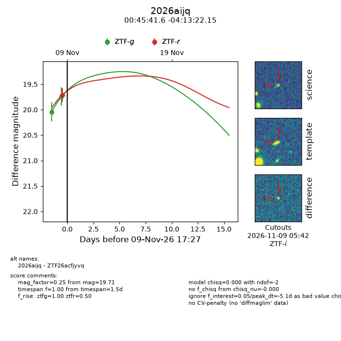
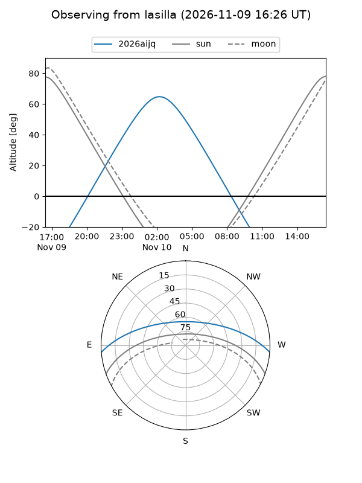
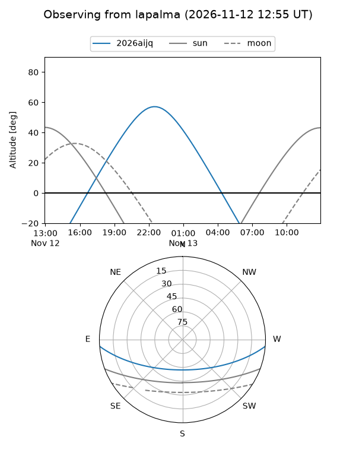
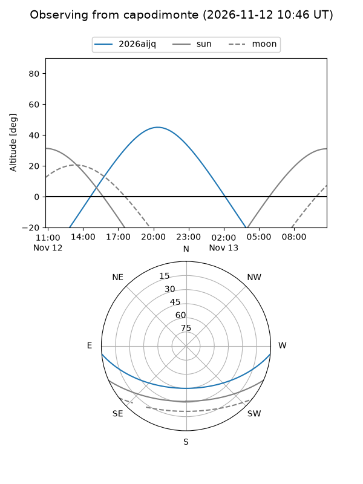
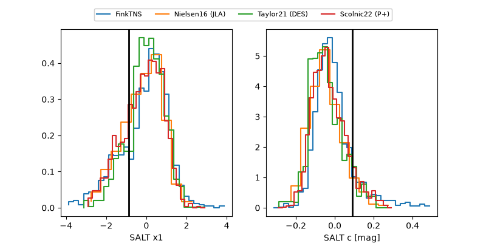

2026aijq
Target 2026aijq at 2026-11-09 17:31
Aliases and brokers:
FINK-ZTF: ztf.fink-portal.org/ZTF26acfjyvq
Lasair-ZTF: lasair-ztf.lsst.ac.uk/objects/ZTF26acfjyvq
ALeRCE-ZTF: alerce.online/object/ZTF26acfjyvq
YSE-PZ: ziggy.ucolick.org/yse/transient_detail/2026aijq
TNS name: wis-tns.org/object/2026aijq
Direct TNS query: direct search
alt names
ZTF26acfjyvq (ztf,fink_ztf)
2026aijq (tns,yse)
Coordinates:
equatorial (ra, dec) = 11.4234,-4.22282
equatorial (HMS+DMS) = 00:45:41.61,-04:13:22.15
galactic (l, b) = (119.2563,-67.05356)
Flags:
peak dt: -5.1
Photometry:
last ztfg=19.74, ztfr=19.71
2 ztfg, 1 ztfr detections
Lightcurve

Visibility



Additional plots
